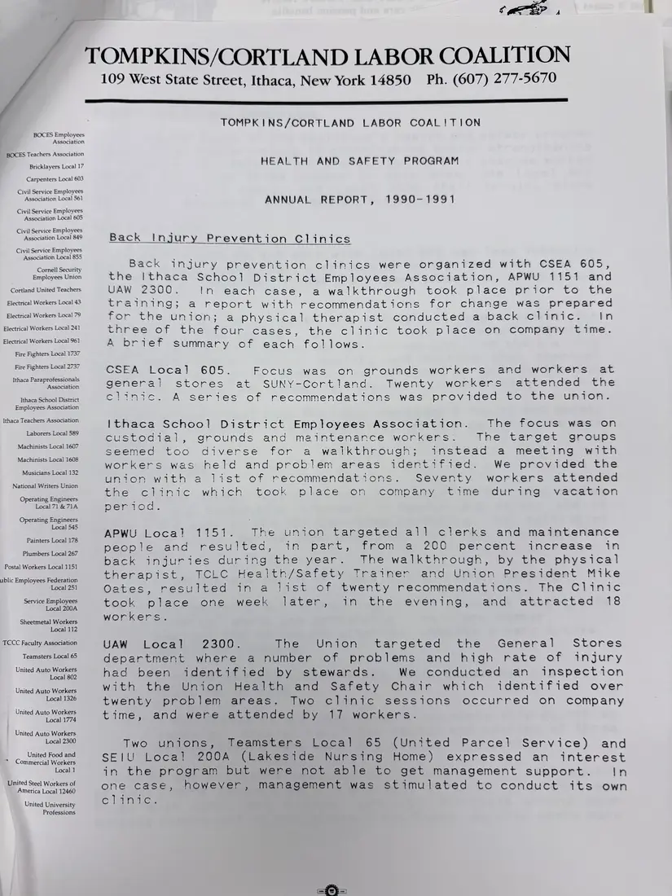
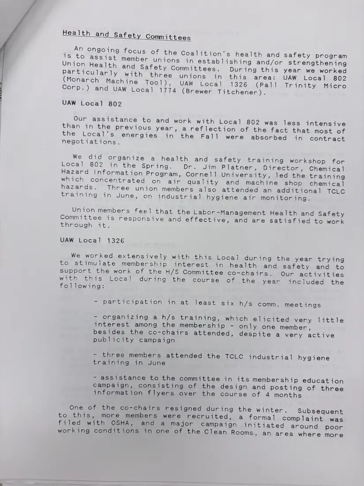
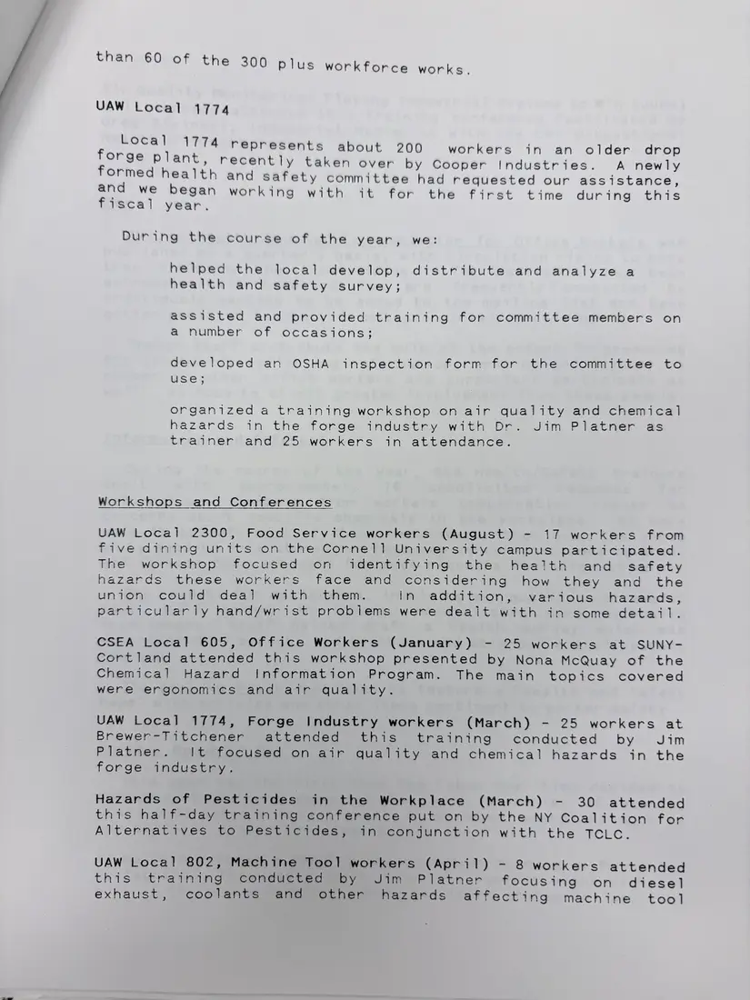
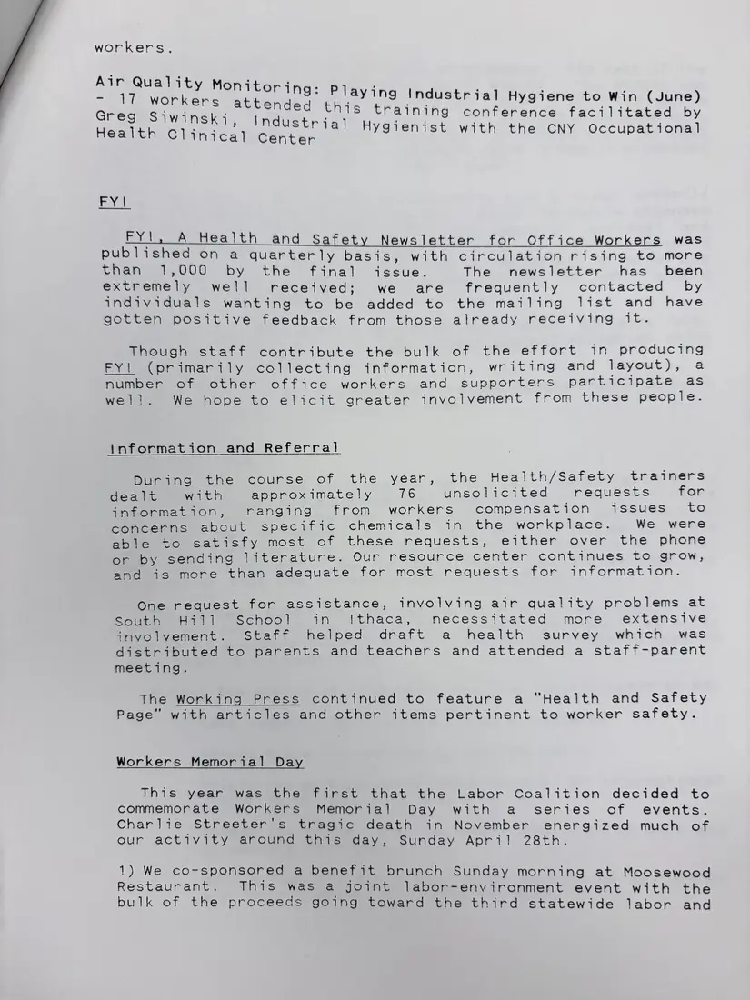
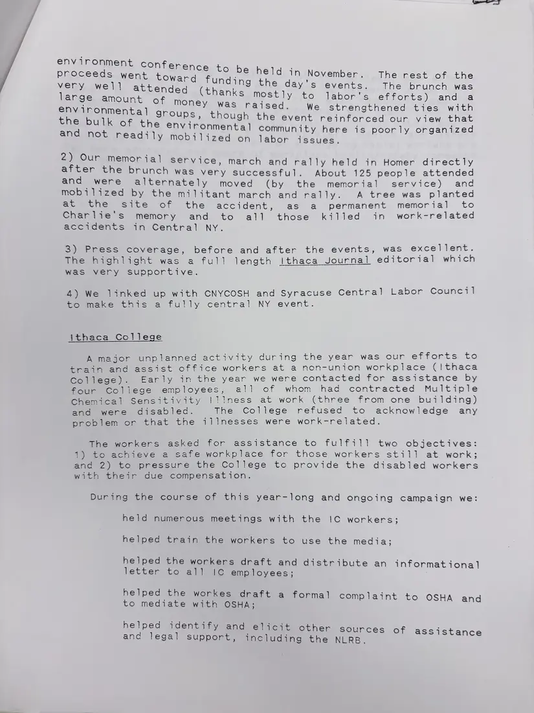
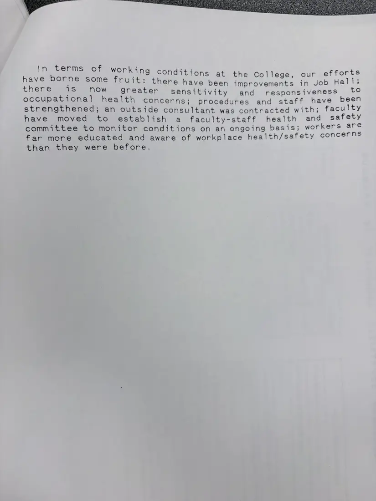

Report, 6 pages
Health and Safety Program annual report, 1990–1991
[1991]Date inferred
The program's year: back injury prevention clinics with CSEA Local 605, the Ithaca school district employees, APWU Local 1151, and UAW Local 2300; work with union health and safety committees at Monarch Machine Tool, Pall Trinity, and Brewer-Titchener; workshops and conferences; the FYI newsletter for office workers; information and referral; the first Workers Memorial Day events after Charlie Streeter's death on the job; and help for Ithaca College office workers made ill at work.
Download or cite this itemPages


(open zoom view)Read the page text (machine-read, mostly readable)
This text was generated automatically from the photograph and has not been corrected. The image is the authoritative record.
tar? , TOMPKINS/CORTLAND LABOR COALITION 109 West State Street, Ithaca, New York 14850 Ph. (607) 277-5670 BOCES Employees Association BOCES Teachers Association Bricklayers Local 17 Carpenters Local 603 Civil Service Employees Association Local 561 Civil Service Employees Association Local 605 Civil Service Employees Association Local 849 Civil Service Employees Association Local 855 Cornell Security Employees Union Cortland United Teachers Electrical Workers Local 43 Electrical Workers Local 79 Electrical Workers Local 241 Electrical Workers Local 961 Fire Fighters Local 1737 Fire Fighters Local 2737 Ithaca Paraprofessionals Association Ithaca School District Employees Association Ithaca Teachers Association Laborers Local 589 Machinists Local 1607 Machinists Local 1608 Musicians Local 132 National Writers Union Operating Engineers Local 71 &71A Operating Engineers Local 545 Painters Local 178 Plumbers Local 267 Postal Workers Local 1151 ublic Employees Federation Local 251 Service Employees Local 200A Sheetmetal Workers Local 112 TCCC Faculty Association Teamsters Local 65 United Auto Workers Local 802 United Auto Workers Local 1326 United Auto Workers Local 1774 United Auto Workers Local 2300 United Food and * Commercial Workers Local 1 United Steel Workers of America Local 12460 United University Professions TOMPKINS/CORTLAND LABOR COAL!TION HEALTH AND SAFETY PROGRAM NOSU=aie Ss 1 ANNUAL REPORT, Back Injury Prevention Clinics Back injury prevention clinics were organized with CSEA 605, the Ithaca School District Employees Association, APWU 1151 and UAW 2300. In each case, a walkthrough took place prior to the training; a report with recommendations for change was prepared for the union; a physical therapist conducted a back clinic. In three of the four cases, the clinic took place on company time. A brief summary of each follows. CSEA Local 605. Focus was on grounds workers and workers at general stores at SUNY-Cortland. Twenty workers attended the clinic. A series of recommendations was provided to the union. Ithaca School District Employees Association. The focus was on custodial, grounds and maintenance workers. Tne target groups seemed too diverse for a walkthrough; instead a meeting with workers was held and problem areas identified. We provided the union with a list of recommendations. Seventy workers attended the clinic which took place on company time during vacation period. APWU Local 1151. The union targeted all clerks and maintenance from a 200 percent increase in The walkthrough, by the physical therapist, TCLC, Health/Safety [raimer and Union President Mike Oates, resulted in a list of twenty recommendations. The Clinic took place one week later, in the evening, and attracted 18 workers. people and resulted, in part, back injuries during the year. UAW Local 2300. The Union targeted the General Stores department where a number of problems and high rate of injury had been identified by stewards. We conducted an inspection with the Union Health and Safety Chair which identified over twenty problem areas. Two clinic sessions occurred on company time, and were attended by 17 workers. Two unions, Teamsters Local 65 (United Parcel Service) and SEIU Local 200A (Lakeside Nursing Home) expressed an interest in the program but were not able to get management support. In one case, however, management was stimulated to conduct its own C liamice


(open zoom view)Read the page text (machine-read, mostly readable)
This text was generated automatically from the photograph and has not been corrected. The image is the authoritative record.
Health and Safety Committees _ An ongoing focus of the Coalition's health and safety program 1s to assist member unions in establishing and/or strengthening Union Health and Safety Committees. During this year we worked Particularly with three unions in this area: UAW Local 802 (Monarch Machine Tool), UAW Local 1326 (Pall Trinity Micro Corp.) and UAW Local 1774 (Brewer Titchener). UAW Local 802 Our assistance to and work with Local 802 was less intensive than in the previous year, a reflection of the fact that most of the Local's energies in the Fall were absorbed in contract negotiations. We did organize a health and safety training workshop for Local S02 Gn the Spring. Dr. Jim Platner, Director, Chemical Hazard Information Program, Cornell University, led the training which concentrated on air quality and machine shop chemical hazards. Three union members also attended an additional TcLc training in June, on industrial hygiene air monitoring. Union members feel that the Labor-Management Health and Safety Committee is responsive and effective, and are satisfied to work Pamough at. UAW Local 1326 We worked extensively with this Local during the year trying to stimulate membership interest in health and safety and to Support the work of the H/S Committee co-chairs. Our activities With this, local duringethe coursesiotethe year included the following: Bepateid Ca pation neatmaleast cq x h/s comm. meetings - organizing a h/s training, which elicited very little interest among the membership - only one member, besides the co-chairs attended, despite a very active publicity campaign ~ three members attended the TCLC industrial hygiene teaini noe ne dune - assistance to the committee in its membership education campaign, consisting of the design and posting of three information flyers over the course of 4 months One of the co-chairs resigned during the winter. Subsequent to this, more members were recruited, a formal complaint was filed with OSHA, and a major campaign initiated around poor working conditions in one of the Clean Rooms, an area where more


(open zoom view)Read the page text (machine-read, mostly readable)
This text was generated automatically from the photograph and has not been corrected. The image is the authoritative record.
than 60 of the 300 plus workforce works. UAW Local 1774 ; Local 1774 represents about 200 workers in an older drop orge plant, recently taken over by Cooper Industries. A newly formed health and safety committee had requested our assistance, and we began working with it for the LIPSt ime during this fiscal year. During the course of the year, we: helped the local develop, distribute and analyze a health and safety survey; assisted and provided training for committee members on a number of occasions; developed an OSHA inspection form for the committee to use; organized a training workshop on air quality and chemical hazards in the forge industry with Dr. Jim Platner as trainer and 25 workers in attendance. Workshops and Conferences UAW Local 2300, Food Service workers (August) - 17 workers from five dining units on the Cornell University campus participated. The workshop focused on identifying the health and safety hazards these workers face and Jcomsidering how they and the union could deal with them. in addition, various hazards, particularly hand/wrist problems were deait with in some detail. CSEA Local 605, Office Workers (January) - 25 workers at SUNY- Cortland attended this workshop presented by Nona McQuay of the Chemical] Hazard Information Program. The main topics covered were ergonomics and air quality. UAW Local 1774, Forge Industry workers (March) - 25 workers at Brewer-Titchener attended this training conducted by Jim Platner. lt focused on air quality and chemical hazards in the forge industry. Hazards of Pesticides in the Workplace (March) - 30 attended this half-day training conference put on by the NY Coalition for Alternatives to Pesticides, in conjunction with the TCLC. UAW Local 802, Machine Tool workers (April) - 8 workers attended this training condueteceepy= Jim Platner focusing on diesel exhaust, coolants and other hazards affecting machine tool


(open zoom view)Read the page text (machine-read, mostly readable)
This text was generated automatically from the photograph and has not been corrected. The image is the authoritative record.
workers. Air Quality Monitor ing: Playing Ind trial i i 17 workers atkene g ustrial Hygiene to Win (June) ein ed th Ws oS, Greg Siwinsk, ineUstr sete training conference facilitated by ; Hygieni é Health Clinical Center ygienist with the CNY Occupational FY!, A Health and Safety Newsletter for Office Workers was published on a quarterly basis, with circulation rising to more Sasa. vUy by the Final issue. The newsletter has been extremely well received; we are frequently contacted by individuals wanting to be added to the mailing list and have gotten positive feedback from those already receiving it. Though staff contribute the bulk of the effort in producing FY! (primarily collecting information, writing and layout), a number of other office workers and supporters participate as well. We hope to elicit greater involvement from these people. information and Referral DimamG the course of the year, the Health/Safety trainers dealt with approximately 76 unsolicited requests for information, ranging from workers compensation issues £6 concerns about specific chemicals in the workplace. We were Siieeto satisfy most of these requests, either over the phone or by sending literature. Our resource center continues to grow, and is more than adequate for most requests for information. One request for assistance, involving air quality problems at South Hill School in Ithaca, necessitated more extensive involvement. Staff helped draft a health survey which was distributed to parents and teachers and attended a staff-parent meeting. The Working Press continued to feature a "Health and Safety Page" with articles and other items pertinent to worker safety. Workers Memorial Day This year was the first that the Labor Coalition decided to commemorate Workers Memorial Day with a series of events. Charlie Streeter'’s tragic death in November energized much of our activity around this day, Sunday April 28th. 1) We co-sponsored a benefit brunch Sunday morning at Moosewood Restaurant. This was a joint labor-environment event with the bulk of the proceeds going toward the third statewide labor and


(open zoom view)Read the page text (machine-read, mostly readable)
This text was generated automatically from the photograph and has not been corrected. The image is the authoritative record.
env ironme onee eee See ebence to be held in November. The rest of the vere WW ward funding the day's events. The brunch was KS attended (thanks mostly to large amount of mone labor's efforts) and a : Y was raised. We strengthened ties with eh eonmental groups, thougt . the bulk of the Ben EA ugh the event reinforced our view that ronmental community here is poorly organized and not readily mobilized on labor issues. 2) Our memorial service, march and rally held in Homer directly after the brunch was very successful. About 125 people attended and were alternately moved (by the memorial service) and mobilized by the militant march and rally. A tree was planted atvetme Site of the accident, as a permanent memorial to Charlie's memory and to all those killed in work-related accidents in Central NY. 3) Press coverage, before and after the events, was excellent. The highlight was a full length Ithaca Journal editorial which was very supportive. 4) We linked up with CNYCOSH and Syracuse Central Labor Council Pommeake cars a fully central NY event. ithaca College A major unplanned activity during the year was our efforts to train and assist office workers at a non-union workplace (ithaca Gollege). Early in the year we were contacted for assistance by four College employees, all of whom had contracted Multiple Chemical Sensitivity |!]]ness at work (three from one building) and were disabled. The College refused to acknowledge any problem or that the illnesses were work-related. The workers asked for assistance to fulfill two objectives: 1) to achieve a safe workplace for those workers stil. at work; and 2) to pressure the College to provide the disabled workers with their due compensation. During the course of this year-long and ongoing campaign we: held numerous meetings with the IC workers; helped train the workers to use the media; helped the workers draft and distribute an informational letter to all IC employees; helped the workes draft a formal complaint to OSHA and to mediate with OSHA; helped identify and elicit other sources of assistance and legal support, including the NLRB.


(open zoom view)Read the page text (machine-read, mostly readable)
This text was generated automatically from the photograph and has not been corrected. The image is the authoritative record.
In terms of workin have borne some fruit: thepe eas occupational 9 conditions at the College, our efforts there have been improvements in Job Hall; now greater sensitivity and responsiveness to health concerns; procedures and staff have been strengthened; an outside consultant was contracted with; faculty have moved to establish a faculty-staff health and safety committee to monitor conditions on an ongoing basis; workers are far more educated and aware of workplace health/safety concerns than they were before.
See something wrong, or recognize a person or event? Send a correction. If you hold rights in this item or think it should not be public, write to the same address.